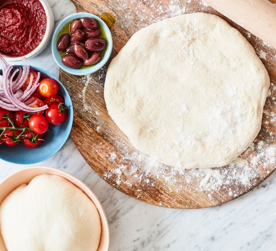

Pizza Dough Recipe

Description
This recipe, adapted from Roberta’s, the pizza and hipster haute-cuisine utopia in Bushwick, Brooklyn, provides a delicate, extraordinarily flavorful dough that will last in the refrigerator for up to a week. It rewards close attention to weight rather than volume in the matter of the ingredients, and asks for a mixture of finely ground Italian pizza flour (designated “00” on the bags and available in some supermarkets, many specialty groceries and always online) and regular all-purpose flour. As ever with breads, rise time will depend on the temperature and humidity of your kitchen and refrigerator.
Ingredients
- Italian Pizza Flour - 1 cup + 1 Tablespoon
- All-Purpose Flour - 1 cup + 1 Tablespoon
- Salt - 1 Tablespoon
- Active Dry Yeast - 3/4 Teaspoon
- Extra-Virgin Olive Oil - 1 Teaspoon
Steps
- In a large mixing bowl, combine flours and salt.
- In a small mixing bowl, stir together 200 grams (a little less than 1 cup) lukewarm tap water, the yeast and the olive oil, then pour it into flour mixture. Knead with your hands until well combined, approximately 3 minutes, then let the mixture rest for 15 minutes.
- Knead rested dough for 3 minutes. Cut into 2 equal pieces and shape each into a ball. Place on a heavily floured surface, cover with dampened cloth, and let rest and rise for 3 to 4 hours at room temperature or for 8 to 24 hours in the refrigerator. (If you refrigerate the dough, remove it 30 to 45 minutes before you begin to shape it for pizza.)
- To make pizza, place each dough ball on a heavily floured surface and use your fingers to stretch it, then your hands to shape it into rounds or squares. Top and bake.